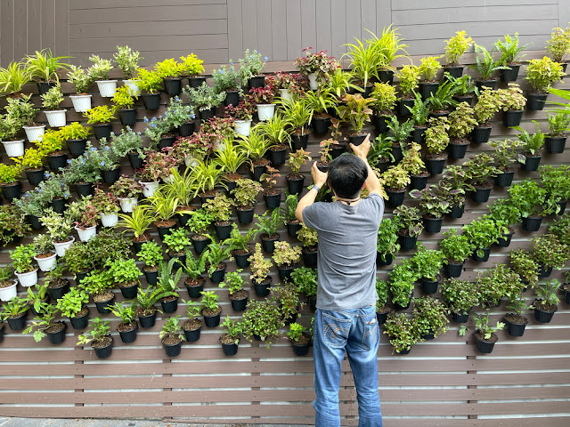

🌾 A Importância de Ter uma Horta em Casa
Leia mais
Já pensou em ter alimentos frescos, como verduras e legumes, dentro da sua casa? Você sabia que é possível cultivar uma variedade de plantas em ambientes internos? Isso mesmo, você pode criar sua própria hortinha em casa, facilitando o acesso a alimentos mais saudáveis e frescos no dia a dia da sua família. Além de promover uma alimentação mais equilibrada, cultivar sua própria horta pode ser uma experiência gratificante e educativa para todos.
As hortas verticais são uma excelente alternativa para quem possui pouco espaço disponível ou até mesmo para quem mora em apartamentos, onde o solo é praticamente inexistente. A construção de uma horta vertical é simples, prática e requer um espaço mínimo. Ela pode ser adaptada conforme as necessidades de cada família, utilizando materiais reutilizáveis e acessíveis, como garrafas PET, canos de PVC ou paletes de madeira.
Além de ser uma forma sustentável de cultivo, as hortas verticais também ajudam a melhorar a qualidade do ar e podem transformar ambientes pequenos e simples em espaços mais verdes e agradáveis. Ao adotar essa prática, você não só economiza ao reduzir a compra de vegetais no mercado, como também tem o prazer de colher seus próprios alimentos frescos, sempre com a certeza de que são cultivados de maneira natural e sem agrotóxicos.
Investir em uma horta em casa é, portanto, uma maneira prática, econômica e ecológica de promover uma alimentação mais saudável e ainda contribuir para um estilo de vida mais sustentável. Comece com algumas ervas ou alface, e aos poucos você verá como é fácil e gratificante cultivar sua própria comida.
